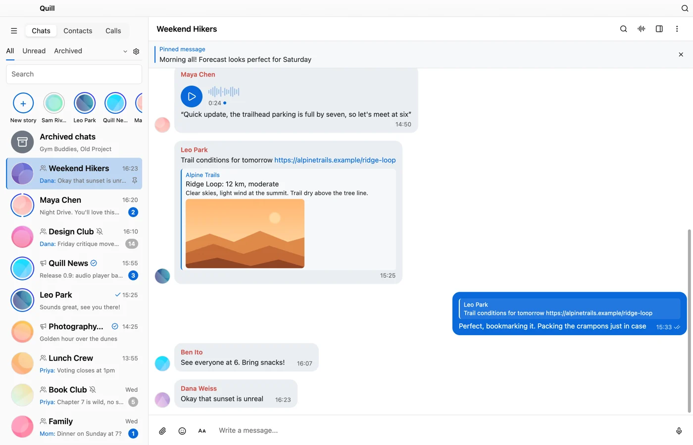

Messaging
Bold, italic, code, spoilers, quotes and links. Replies and quote-replies, forwarding, scheduled and silent messages, cloud drafts, reactions and polls.
Early preview · open source
Quill runs on macOS, Windows and Linux and draws its whole interface on the GPU. It talks to Telegram through the official TDLib library, so your chats, contacts and account are the real thing.
Unofficial. Not affiliated with Telegram.
Quill is early and still changing quickly. Use it at your own risk: it comes with no warranty, and the maintainers aren't responsible for lost data, account restrictions or bans, missed messages, or any other damage. Keep an official Telegram app installed alongside it.
Quill is built from scratch, but it isn't a toy. Most of what you do in Telegram on a desktop already works.
Bold, italic, code, spoilers, quotes and links. Replies and quote-replies, forwarding, scheduled and silent messages, cloud drafts, reactions and polls.
Photos, videos, albums, GIFs and stickers. Voice and video messages recorded right in the app, with transcription. A fullscreen viewer, an audio player bar and a downloads list.
One-to-one audio and video calls with screen sharing, and group voice chats.
Admin tools, invite links, join requests, forum topics, comments, and channel statistics. Bots with keyboards, inline results and games.
Secret chats, a local passcode lock, active-session management and two-step verification. No analytics: apart from Telegram, Quill only contacts GitHub to look for updates, and you can switch that off.
Light and dark themes with automatic night mode, accent colors, chat wallpapers, text size, and bubble or plain message layouts.
Captured from the real app window, filled with demo conversations.

Quill doesn't reimplement Telegram's protocol. Every request goes through TDLib, Telegram's own client library, the same one many third-party apps use. Encryption, sync and the local message database are TDLib's job.
The interface is native Rust on GPUI, the GPU-accelerated UI framework from the Zed editor. There's no browser engine and no web view inside.
The source is on GitHub under the MIT license. Every third-party component and its license is listed in the repository and inside the app under Settings → Appearance → About Quill.
Some features can't be built yet, and some haven't been. Here's the honest list of the bigger ones, checked against TDLib 1.8.68. Smaller gaps are tracked in the repository's checklist.
Loading…
There's no release yet. The first builds will show up here, and on GitHub Releases, when they're ready. Until then you can build Quill from source.
macOS 14 or later on Apple Silicon · Windows 10 or later (x64) · Linux x86_64 with glibc. Builds aren't signed with a paid developer certificate yet, so your system will ask you to confirm the first launch.
No. Quill is an independent project. It isn't affiliated with, endorsed by, or sponsored by Telegram. It uses the public Telegram API under Telegram's API Terms of Service, through Telegram's own TDLib library.
Quill follows Telegram's rules for third-party apps as closely as we can, but Telegram decides what it allows, and we can't promise anything. Quill is experimental: use it at your own risk.
Quill runs on your computer and stores its data there, encrypted with a key kept in your system's keychain (macOS), DPAPI (Windows) or a private file (Linux). It has no server of its own and collects no analytics.
Releases aren't signed with a paid Apple or Microsoft certificate yet. On macOS, open System Settings → Privacy & Security and choose Open Anyway. On Windows, choose More info → Run anyway. Each release lists SHA-256 checksums so you can verify the download.
Try it, and open an issue when something breaks or feels off. Pull requests are welcome too.